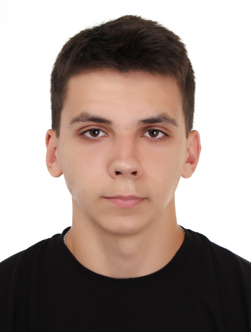
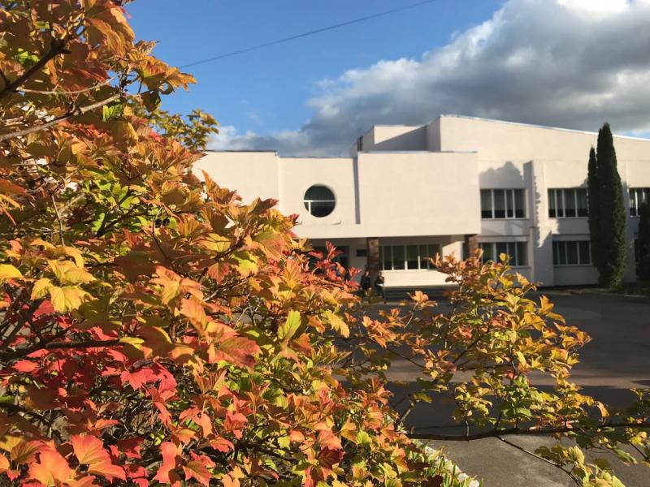
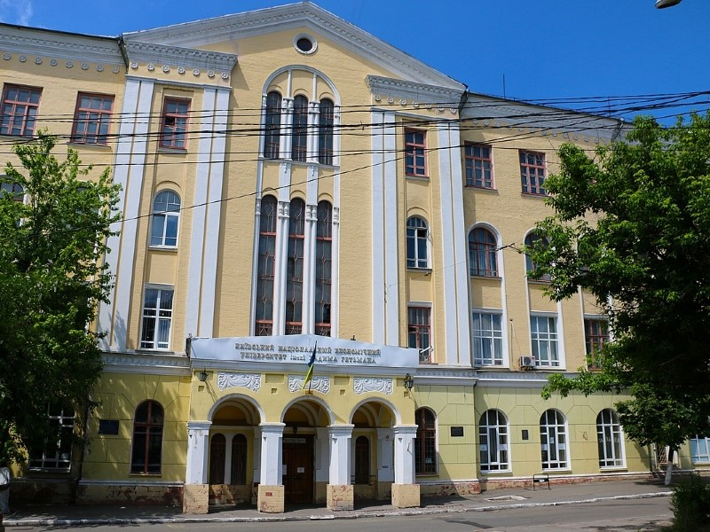
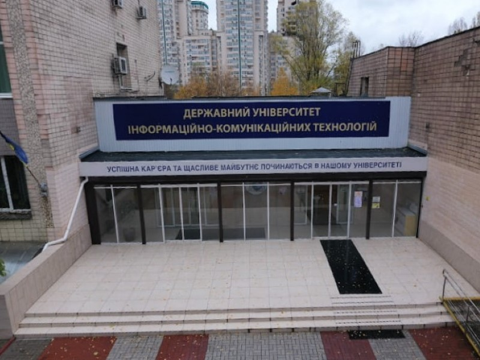

Вадим Войцеховський
💻️ Розробник ПЗ
Я юний спеціаліст в середовищі розробки. Маю непоганий досвід у написанні невеликих проєктів.
Тим не менш, я прагну досягати більшого та вдосконалюватися у речах за які беруся. Це не тільки в ІТ.
Ця індустрія розвивається і добре відомі фірми як-от Sigma Software, EPAM, AJAX та інші шукають
перспективних інженерів та розробників щоб робити якісне та надійне програмне забезпечення.
Тому моя мета, стати таким претендентом і розробляти мобільні застосунки та програми під ПК.
Окрім цього, я не лише цікавлюсь технологіями та комп'ютерами. Я займаюсь спортом, іноді люблю послухати музику,
інколи створюю класні відео під музику, коли йду на баскетбол. Маю пристрасть до автомобілів.
НАВИЧКИ
| КОМУНІКАЦІЙНІ |
| Дотепний |
| Ввічливий |
| Терплячий |
| Відповідальний |
| ТЕХНІЧНІ |
| .NET |
| Java |
| MySQL |
| Spring |
| Office |
| HTML, CSS, JS |
| Git & GitHub |


ОСВІТА

Академічний ліцей №5, Обухів
1 вересня 2011 - 15 червня 2020Отримав базову середню освіту на базі 9 класів в цій школі з поглибленим вивченням іноземних мов.

ФКІСІТ КНЕУ, Київ
1 вересня 2020 - 30 червня 2024
Розпочав навчання в цьому коледжі після школи. Прийшов на перший курс, провчився 2 роки, і по
завершенні програми 11 класів, здав національний мультипредметний тест, тим самим отримавши
атестат про повну загальну середню освіту (червень 2022).
Після цього, продовжив навчання ще на 2 роки, і як результат отримав диплом фахового молодшого
бакалавра.

Державний університет ІКТ, Київ
1 вересня 2024 - наш часЗараз я навчаюсь в цьому університеті. Це провідний вищий навчальний заклад. В ньому є всі спеціальності, зв'язані з ІТ.
ПРОЄКТИ
SPOTS
Цей проєкт являє собою класичну гру на платформі C# Windows Forms, надаючи інтуїтивний користувацький інтерфейс і просте управління.
GUARD
Програма написана на C# Forms для OS Windows, яка автоматично визначає і очищає дублікати фото та відео.
RESTAURANT
Онлайн JavaScript ресторан, що надає послуги для перегляду категорій продуктів та замовлення їжі.
CHATBOT
Інформаціний Java Spring бот для автомобілістів, що пропонує вивчати все про машини, їх типи, марки, архітектуру і т. д.